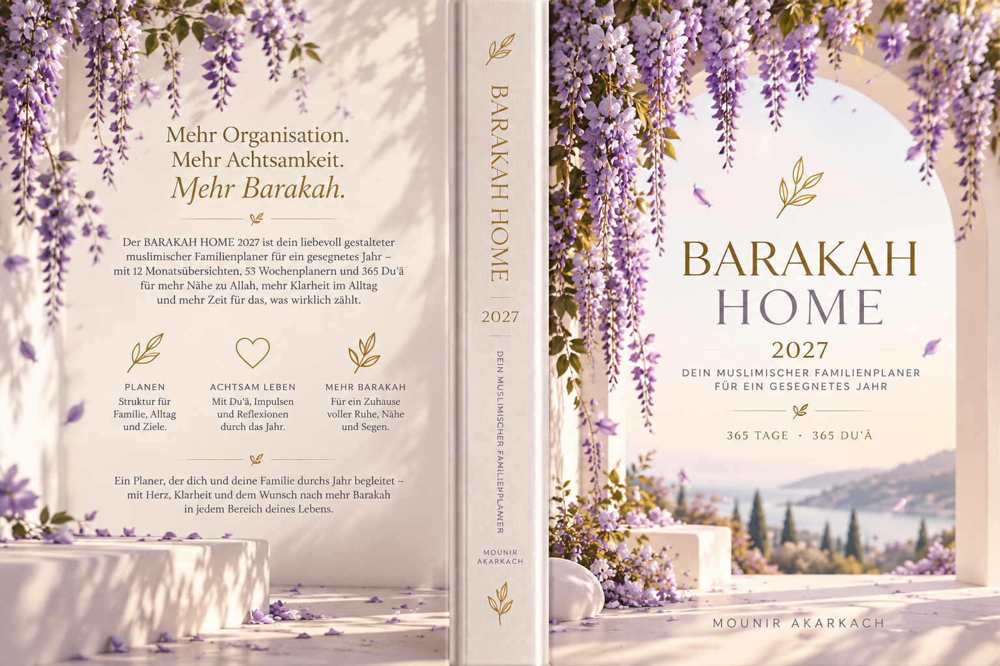

Weniger im Kopf.
Mehr im Herzen.
Ein Ort für eure Termine, Kinder, Mahlzeiten, Gebete und kleinen Glücksmomente – liebevoll inspiriert vom Buch BARAKAH HOME 2027.

BARAKAH HOME 2027
Ein ruhiger Familienplaner für Tagesziele, Kinder-Kompass, Mahlzeiten, Haushalt, Iman und 365 Duʿā.
Amazon-Titelsuche; die genaue Produkt-ASIN ist nicht verifiziert. Keine vollständige Buch-PDF öffentlich.Dein Zuhause. Immer dabei.
Als Web-App auf dem Startbildschirm installieren und den lokalen Familienplaner auch offline öffnen.
Nach Installation startet Nadia’s Bloom über das App-Symbol ohne sichtbare Browserleiste.
Android / iPhone: Installationsanleitung
iPhone: In Safari öffnen · Teilen · „Zum Home-Bildschirm hinzufügen“ · „Als Web-App öffnen“ aktivieren.
Vier kleine Schritte. Ein leichterer Tag.
Du musst nicht alles planen. Wähle einfach einen Bereich und beginne dort, wo du heute Entlastung brauchst.
Dein Tag auf einen Blick
Die nächsten sieben Tage
Was heute wirklich zählt
Niyyah & Top 3
Beginne mit einer klaren Absicht. Drei Dinge sind genug.
Heute gemeinsam
Offene Aufgaben
Ein Moment für dein Herz
Ein kleiner Moment für dich
Zwischen Terminen, Gebeten und Familienalltag bleibt Platz für Ruhe. Beginne mit einer Duʿā oder halte einen dankbaren Gedanken fest.
Kalender & Termine
Alles Wichtige im Blick. Persönliche Termine, Schule, Kita und gemeinsame Momente – ohne überfüllten Kalender. Der Monatskalender läuft jahresübergreifend; gesetzliche Feiertage werden berechnet. Hinterlegte Schulferien in Hessen reichen derzeit bis Anfang 2030, spätere Ferientermine werden nicht geschätzt.
Neuen Termin hinzufügen
Termine
Monatsblick
Automatisch: offizielle Hessen-Ferien und gesetzliche Feiertage (Quellen im Kalender); islamische Daten gemäß Verbandskalender mit Mondsichtungsabweichung. Bewegliche Schultage bitte bei der Schule prüfen. Termine und Geburtstage kommen aus deinen Eingaben.
Regionales Kalenderprofil
Aufgaben & Routinen
Nicht jede Aufgabe ist dringend. Delegiere bewusst, verschiebe liebevoll und feiere, was bereits geschafft ist.
Eine Aufgabe notieren
Deine Aufgaben
Kinder-Kompass
Wichtige Schul- und Kita-Themen, Bedürfnisse, Termine und besondere Momente – ohne Leistungsdruck.
Familienmitglied hinzufügen
Unsere Familie
Moment für uns
Familiennotizen
Essen & Wochenplanung
Plane Frühstück, Mittag und Abendessen. Ein einfaches Essen mit lieben Menschen darf vollkommen genügen.
Gericht einplanen
Essensplan
Einkauf & Vorrat
Ein liebevoller Einkaufszettel, der an das erinnert, was wirklich fehlt – statt mehr zu sammeln.
Zur Liste hinzufügen
Unsere Einkaufsliste
Home & Haushalt
Schöne Ordnung entsteht durch kleine, faire Routinen. Die Checkliste ist an BARAKAH HOME 2027 angelehnt.
Haushaltsroutinen
Eigene Routine
Haushalt & Finanzen
Ein ruhiger Überblick über Einnahmen, Ausgaben und Sparziele. Alles bleibt lokal auf diesem Gerät.
Buchung hinzufügen
Monatsübersicht
Ein stiller Moment für dich
Niyyah, Dankbarkeit, Gebete und 365 Tages-Duʿā aus dem veröffentlichten Buch, sorgfältig als Quellenzitat oder persönliche Bitte gekennzeichnet.
Deine tägliche Duʿā
Die Unterscheidung folgt der Buchkennzeichnung. Schriftzitate und Quellen bitte im Buch nachschlagen; persönliche Duʿā sind frei formuliert.
Die fünf Gebete
Zeiten zunächst manuell. Auf Wunsch berechnet Nadia’s Bloom sie offline aus Datum, Ort und deiner Berechnungsmethode. Gemeindezeiten können abweichen.
Gemeinsame Shura
Welche Entscheidung brauchen wir als Familie? Was darf warten? Wie können wir einander unterstützen?
Dankbarkeit & Gedanken
Nicht alles muss dokumentiert werden. Nur das, was du gerne festhalten möchtest.
Ein schöner Moment
Meine Einträge
BARAKAH HOME 2027
Der islamische Familien- & Alltagsplaner · Deutschland Edition, von Mounir Akarkach. Das Buch inspiriert die digitale Alltagsgestaltung.
Mehr Achtsamkeit.
Mehr Barakah.
Dieses Originalcover mit seinem zarten Blauregen bildet die gestalterische Grundlage von Nadia’s Bloom. Hinter der App steht der Familienplaner mit Monatsübersichten, Wochenplanung und 365 Duʿā für das Jahr 2027.
Originalcover aus dem Buchprojekt · keine nachgezeichnete oder KI-erfundene Abbildung.
Ein geschützter Raum für eure Familie
Aus der dreibändigen AI Pathology Handbook-Reihe: 150 technische Risikoklassen sind erfasst. Endlosschleifen, unbelegte Behauptungen und unerlaubte Aktionen werden in einem begrenzten, lokalen Prüfmodell kontrolliert. Die Registrierung einer Risikoklasse ist keine Garantie ihrer Erkennung.
Noch keine synthetische Prüfung durchgeführt. Keine Verbindung zu einem KI-Anbieter erforderlich.
Welche Fehlerklassen werden untersucht?
Band I: Inferenz, Erinnerung, Autorisierung, Aktion, Evidenz, Werkzeuge, Orchestrierung, Identität, Updates und Dialog. Band II: kombinierte Fehler, Drift, Grenzverletzungen, Provenienz, Versionen und Selbstheilungs-Schleifen. Band III: Konsequenzen, Forensik, Begründbarkeit, Selbstfreigabe und Meta-Governance.
Begrenzung: Die Tests verwenden erfundene Beispiele; sie bestätigen keine reale Sprach-KI. Happy wird erst nach nachgewiesenem Ende-zu-Ende-Test, Nutzerfreigabe und Kostenkontrolle wieder zugelassen. Persönliche Daten werden für den Selbsttest nicht gelesen oder versendet.
Region & Sprache
Das Gerät schlägt die Sprache vor. Du kannst sie jederzeit ändern.
Deutschland: nur nationale Feiertage und hessische Schulferien. Alle anderen Länder: nur islamische Festtage.
Islamische Kalenderdaten sind Näherungen und können lokal um einen Tag abweichen. Für 2026–2027 sind Vorlagen hinterlegt; andere Jahre nutzt eine unverbindliche Umm-al-Qura-Berechnung.
Alle Bereiche auf einen Blick
Wähle, was dir gerade hilft. Alles ist direkt erreichbar – auch auf dem Handy.
Das Buch entdecken
Weniger im Kopf. Mehr im Blick. Ein liebevoller Begleiter für die Balance zwischen Familie, Haushalt, Essen, Terminen, Niyyah, Gebet und Dankbarkeit. Die App enthält 365 aus der Buchfassung übernommene Tages-Duʿā für 2027.
„Ein Planer, der dir dienen soll – nicht umgekehrt.“
Der Kinder-Kompass hilft, Schule, Kita, Termine und die Bedürfnisse jedes Kindes im Blick zu behalten. Home & Money bringt Klarheit in Haushalt, Einkauf und Geld.
„Du musst nicht jede Zeile ausfüllen und du musst auch nicht jeden Tag perfekt planen.“
Der Tagesrhythmus verbindet Niyyah, drei machbare Prioritäten, Gebete und Mental Load: Was darf heute delegiert, verschoben oder weggelassen werden?
Kurze redaktionelle Leseprobe auf Basis der Ausgabe BARAKAH HOME 2027. Weitere Buchinhalte und die vollständige PDF sind hier bewusst nicht öffentlich verlinkt.
Anmelden & Zugang sichern
Optionales Konto mit E-Mail und Passwort oder einmaligem E-Mail-Code. Du kannst den Familienplaner weiterhin ohne Anmeldung verwenden. Wichtig: Kalender-, Kinder- und Finanzdaten bleiben vorerst ausschließlich auf diesem Gerät und werden auch nach Anmeldung nicht automatisch synchronisiert.
Passwort oder Zugangsdaten vergessen?
Passwort vergessen: Gib deine bestätigte E-Mail-Adresse oben ein und fordere einen Wiederherstellungslink an. Den Link öffnest du wieder in Nadia’s Bloom.
Der Link öffnet ein gesondertes Formular zum Festlegen des neuen Passworts.
E-Mail-Adresse vergessen? Aus Sicherheitsgründen können wir keine unbekannte E-Mail-Adresse ermitteln. Wenn du sie auf diesem Gerät zuvor gespeichert hast, kann sie lokal wieder angezeigt werden; ansonsten prüfe deine eigene E-Mail-Postfachhistorie. Keine Offenlegung fremder Konten.
Angemeldet als .
Der lokale Familienplaner ist nicht mit diesem Konto synchronisiert. Vor einem Gerätewechsel bitte eine JSON-Sicherung erstellen.
Neues Passwort festlegen
Dein Wiederherstellungslink wurde bestätigt. Wähle ein neues Passwort mit mindestens acht Zeichen.
Keine Anmeldung erforderlich, um Nadia’s Bloom zu nutzen. E-Mail-Bestätigungen hängen vom vorhandenen Anbieter und dessen Versandlimits ab.
Authentifizierung über den bestehenden Supabase-E-Mail-Dienst. Kein Passwort wird an den lokalen Familienplaner oder eine Sprach-KI gesendet; es wird ausschließlich per HTTPS an den Authentifizierungsdienst übermittelt. E-Mail-Code und Passwortzurücksetzung müssen mit einem tatsächlich empfangenen Link oder Code separat geprüft werden.
Deine Daten & Privatsphäre
Alle Planungsdaten werden ausschließlich im Browser dieses Geräts gespeichert. Keine automatische Cloud-Synchronisation und kein gemeinsamer Account. Sichere daher regelmäßig eine Sicherungsdatei.
Bisherige Nadia’s-Bloom-Version inkl. alter Galerie und Feiern öffnen ↗. Die alten Browserdaten bleiben erhalten.
Eine gespeicherte HTML-Datei funktioniert lokal ohne Cloud. Anmeldung und externe Links benötigen Internet. Die lokale Familienplanung funktioniert auch offline.
Gebetszeiten · einmal einstellen
Entweder täglich dieselben manuellen Zeiten verwenden oder einmal einen Ort wählen: Dann passt die App die Sonnenzeiten jeden Tag rechnerisch an. Standort nur auf deinen ausdrücklichen Klick; keine Standortübermittlung.
Bei aktiviertem Automatikmodus werden die Gebetszeiten täglich aus Sonnenstand und gewähltem Ort berechnet. Zeiten bitte mit dem Kalender deiner Gemeinde abgleichen.
Rechte & Weitergabe
Persönliche private Alltagsnutzung der bereitgestellten Anwendung. Institutionelle oder kommerzielle Nutzung, Vertrieb oder Anpassung nur nach gesonderter Vereinbarung.
Konto & Sicherheit
Die Familienplanung funktioniert ohne Anmeldung. Ein Konto synchronisiert eure Daten noch nicht.
Ein geschützter Familienraum
Deine Einträge bleiben auf deinem Gerät. Exportiere zur Sicherheit regelmäßig eine Datensicherung.